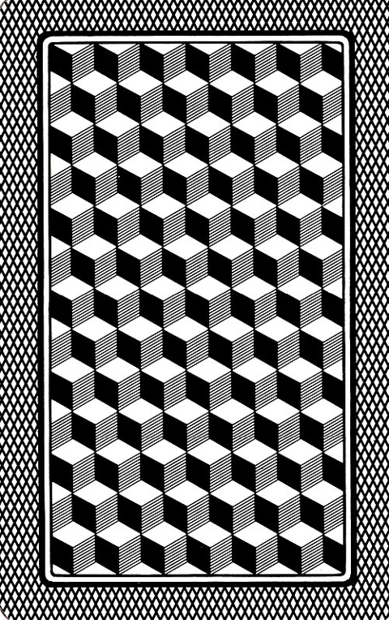

Mazzo:
ScopaIl tavolo napoletano
Una carta alla volta.
La presa giusta fa la differenza.
Scopa a due o Scopone a coppie.
Con le carte napoletane originali.
Una carta alla volta.
La presa giusta fa la differenza.
Scopa a due o Scopone a coppie.
Con le carte napoletane originali.
Tavolo libero

Passa il dispositivo a
Le carte restano coperte fino alla conferma.